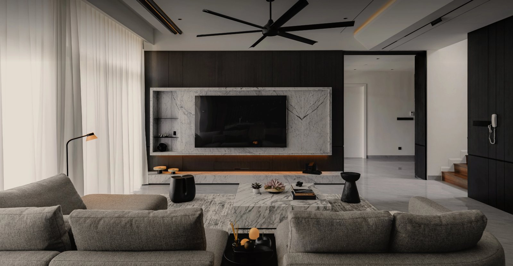
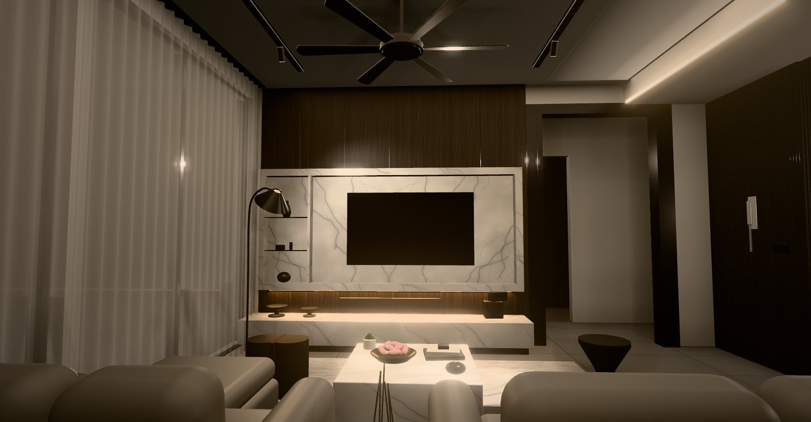

参考图的语言是深色胡桃木饰面、白色大理石电视框、藏在框下的暖色灯带和落地纱帘。这里把它放进一套三室两卫的公寓：客厅按参考图高细节还原，其余房间沿用同一套材料。拖动时间，看日光怎样照进这间深色的客厅，日落后又怎样由分层灯光接手。
真实尺寸（单位 m）。拖动时间，太阳位置按 NOAA 公式实时算出；客厅的平均照度 = 日光（日光系数 × 室外天光）+ 灯光（流明法，按场景补足）。右侧可以换场景、纱帘和电视墙饰面，左上角切换视角：鸟瞰、参考图同一角度的客厅、平面图。键盘：E 爆炸 C 剖切 X X 光 L 标签 Space 暂停
需要联网：three.js 0.170 来自 jsDelivr，字体来自 Google Fonts。没有显示？单独打开 ↗
同一个角度：沙发后面、眼睛高度，看向电视墙。模型取参考图的材料和氛围，布局是为这套公寓重新设计的：电视墙右边的黑框门洞通往卧室走廊，左边是落地窗和纱帘，天花是黑色六叶吊扇、两条磁吸轨道和东侧的灯槽。


测试台上，灯箱当天空，玻璃和纱帘当窗，敞口的盒子当客厅，盒子内壁贴着电视墙的饰面样板。表上的读数是日光系数，与 3D 模型用的是同一个公式、同一组参数。在这里换饰面或拉纱帘，会同步到上面的 3D 模型：电视墙换材质，纱帘拉开或拉上，照度随之重算。
标为有出处的取自公开资料；标为假设的是演示用的典型值，正式设计时应按选定的产品和实测替换。所有数值都在 shared/daylight.mjs 一处定义，3D 模型和测试台共用。
| 量 | 数值 | 说明 | |
|---|---|---|---|
| 地点与日期 | 3.14°N 101.69°E · UTC+8 · 2026-10-14 | 吉隆坡；日出约 07:02，日落约 18:57（未计大气折射，实际约晚 10 分钟） | 假设 |
| 太阳位置 | 正午高度 79° | NOAA General Solar Position Calculations | 有出处 |
| 室外天光 | 0.3 + 45 sin α klx | IES 日光可用性公式，多云天；直射 127.5·e−0.80m klx，m 按 Kasten–Young | 有出处 |
| 平均日光系数 | DF = T·Aw·θ / (A(1−R²)) | BRE（Littlefair）平均日光系数公式 | 有出处 |
| 客厅窗面积 | 23.7 m² 净玻璃 | 西窗 5.0 × 2.85 m、南窗 4.8 × 2.85 m，玻璃占开口 85 % | 假设 |
| 透光率 T | 玻璃 0.62 · 纱帘 0.55 | Low-E 双层玻璃（含积尘）；纱帘典型 0.5–0.7 | 假设 |
| 可见天空角 θ | 75° | 高楼层、前方开阔 | 假设 |
| 反射率 ρ | 胡桃木 0.12 · 大理石 0.70 · 白漆 0.80 · 地砖 0.45 · 天花 0.85 | 常见材料的典型值；室内平均 R = 0.46（胡桃木） | 假设 |
| 日光系数结果 | 11.3 % → 6.2 % | 纱帘拉开 → 拉上；换白漆 12.1 %，换大理石 12.0 % | 计算 |
| 天花灯槽 | 90 W · 9,000 lm · UF 0.30 | 9 m × 10 W/m，2700 K；满开约 74 lx | 假设 |
| 磁吸轨道灯 | 60 W · 5,100 lm · UF 0.55 | 6 × 10 W，36°；满开约 77 lx | 假设 |
| 电视墙灯带 | 64 W · 5,760 lm · UF 0.12 | 6.4 m × 10 W/m，2400 K；主要照墙和台面，约 19 lx | 假设 |
| 落地灯 | 8 W · 806 lm · UF 0.45 | 约 10 lx | 假设 |
| 维护系数 MF | 0.8 | 流明法 E = Φ·UF·MF / A | 有出处 |
| 场景目标 | 日常 140 lx · 会客 175 lx | 观影：灯带 70 %、落地灯 40 %，约 17 lx；夜间：灯带 20 %、灯槽 8 % | 假设 |
| 自动纱帘 | 直射 > 8 klx 拉上，< 6 klx 拉开 | 窗上的竖向直射照度，计 0.6 m 楼板出挑遮挡；日落后拉上（隐私） | 假设 |
| 电视对比度 | (450 + Lr) / (0.09 + Lr) | Lr = 0.015 × 0.5E / π；入夜观影约 3,400 : 1，白天拉上纱帘约 70 : 1 | 假设 |